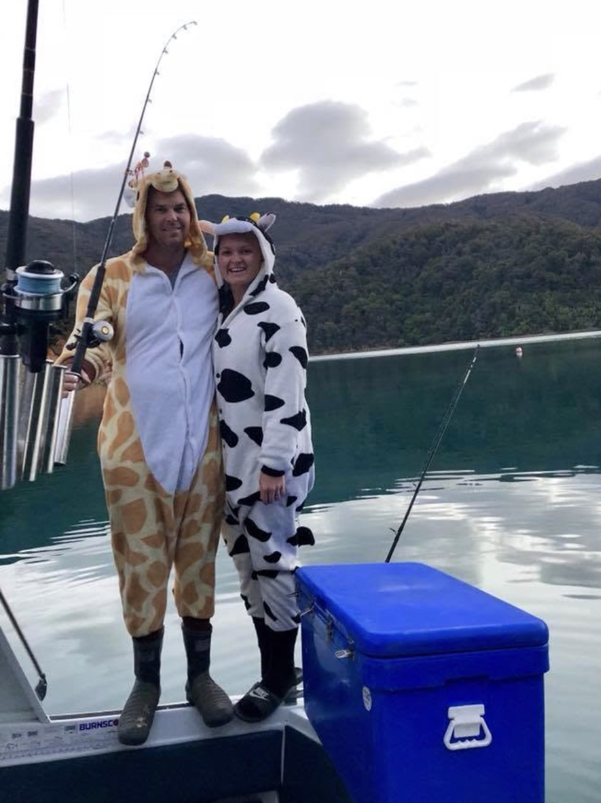
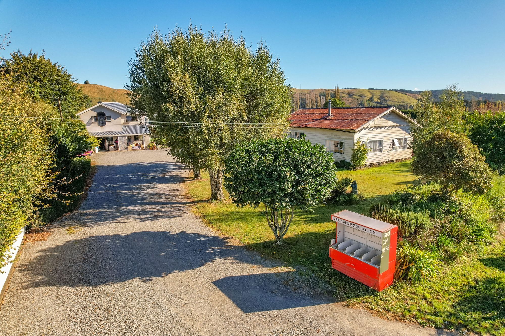
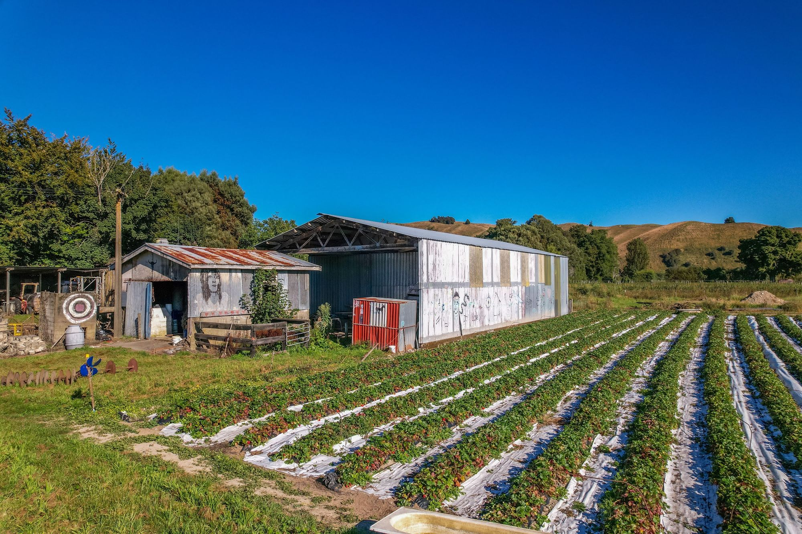

Our Story
Meet Patrick and Elise, the people behind Fairfield Berries.

Patrick & Elise
In July 2022, Patrick and Elise Cotter traded town life and office work for life among the berry rows, taking over Fairfield Gardens, a piece of local history that had been running for about 40 years.

Life among the berry rows
For Patrick, a builder who had moved into a project management office role, the move was all about leaving the desk behind and getting back outdoors. For Elise, a teacher who grew up on a farm growing strawberry plants, stepping onto the property felt like coming full circle. Their backgrounds turned out to be the ultimate preparation for running a busy family orchard.
Ironically, neither of them ever pictured living this far out in the country. Now, they wouldn’t trade it for anything, and a quick trip into town traffic is all it takes to remind them how lucky they are! It truly feels like paradise, and they know their kids don’t yet realise just how lucky they are to be growing up right among nature’s lollies.


Growing Fairfield Berries
Since taking the reins, Patrick and Elise have planted out the remaining bare land on the property and replanted some of the older plants. They’ve added plenty of their own fresh ideas to make Fairfield Berries the place it is today. The farm is known for its great ice creams and delicious fruit: juicy red strawberries, raspberries, boysenberries and more.
Fairfield Berries is proud to be the only Pick Your Own (PYO) spot in the area. Alongside fresh fruit, our shop is stocked with gifts made locally in Nelson Tasman, frozen berries and delicious stone fruit. And, of course, you’ll find the ultimate Kiwi favourite: our creamy, affordable real fruit ice creams, with plenty of flavours to enjoy all summer long!
Making summer memories
More than anything, they love carrying on classic Kiwi Christmas traditions for families and making summer a happy time for all. Watch this space, because they are constantly upgrading the place and bringing new projects to life.
As the saying goes, you can’t buy happiness, but you can buy dirt.

Come and see us
Pick berries when they're in season, enjoy real fruit ice cream and explore what's in the farm shop.
